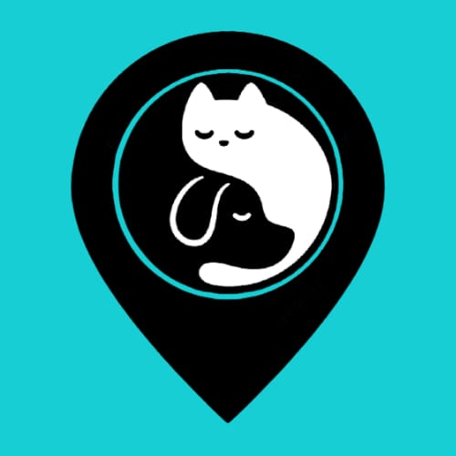
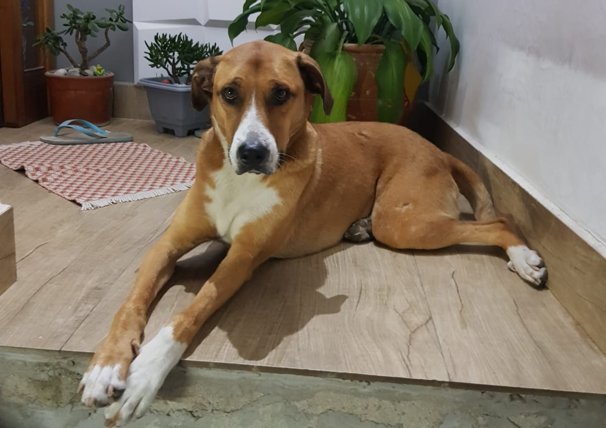

CADÊ MEU PET?
Últimos anúncios
Poste seu anúncio
Rede social
Insira seu post
Minha Conta
Ajude-nos a encontrar nossos amiguinhos que estão perdidos!
NOAH
Raça: Labrador
Desapareceu em: Tatuapé, São Paulo - SP
KIARA
Raça: Poodle
Desapareceu em: Jardim Varginha, São Paulo - SP
PITUXO
Raça: Maine Coon
Desapareceu em: Grajaú, São Paulo - SP

LILICA
Raça: Vira-Lata
Desapareceu em: Embu-Guaçu - SP
CLAIRE
Raça: Fila Brasileiro
Desapareceu em: Jarinu - SP
NOAH
Raça: Labrador
Desapareceu em: Tatuapé, São Paulo - SP